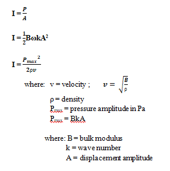
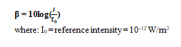
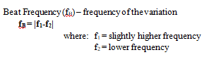
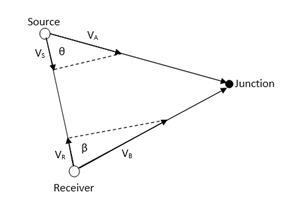

Acoustics
-
Sound and Hearing
- Sound – longitudinal waves traveling thru solid, liquid or gas.
- Acoustics – branch of physics that deals with the relationship between the physical characteristics of a sound like amplitude, frequency, wavelength, intensity, etc and the human sense of hearing
- Acoustic Phenomena – the events that involve sound as it affects human sound perception like beats, interference, and Doppler’s effect
- Audio Frequency (AF) – frequency of waves ranging from 20 to 20,000 Hz which human ear can respond to.
- Ultrasonics – those waves of frequencies above the AF.
- Infrsonics – those waves of frequencies below the AF.
- Pitch or Tone – that property of sound directly related to frequency
- Quality of sound – that property of sound directly associated with the complexity of the wave form
- • Complexity – a measure of the deviation of a sound wave from the ideal smooth sinusoidal wave.
- Loudness of sound - that characteristic of sound directly related to the amplitude of the waves.
- Refers to the listener’s subjective perception of the magnitude of a sound sensation
or the strength of the sensation received by the ear. - • High amplitude sound waves are loud sound
- Intensity of Sound (I) – the time rate at which sound energy is transmitted by the waves per unit area of a surface placed perpendicular to the direction of the waves
- Power transmitted per unit area (watts/m2) - 
- • Pressure amplitude – maximum variation from atmospheric pressure of the air pressure near the eardrums
- - Logarithmic evaluation of the intensity of sound waves
- - The unit is decibel (dB)
- 
- • Threshold of hearing – minimum noise level that can be heard by the ear (0dB)
- • Threshold of pain – maximum noise level that the human ear can withstand (120dB)
Characteristics of Sound
Maximum pressure amplitude – the loudest sound that the human ear can tolerate (30 Pa)
Minimum pressure amplitude – the faintest sound that can be heard by the human ear (3 x 10-5 Pa)
Intensity Level or Noise Level (Β)
-
Acoustic Phenomena
- - Variation in amplitude of sound waves due to the alternate constructive and destructive interference of two sound waves of slightly different frequencies reaching the ears at the same time.
- 
- - The change in frequency of the sound as it is received due to the relative motion between the source and the receiver.

- • In cases where the source and the receiver are not moving along the same line, VS and VR are the components of the actual velocities of the source and the receiver along the line connecting them at the instant sound was emitted.
- 
1. Beats
2. Doppler’s Effect
-
Sample Problems
- 1. Calculate the pressure amplitude of a 2 KHz sound wave in air, assuming that the displacement amplitude is equal to 2 x 10–8 m.
- 2. The power output of a certain public-address speaker is 6.00 W. Suppose it broadcasts equally in all directions. (a) Within what distance from the speaker would the sound be painful to the ear? (b) At what distance from the speaker would the sound be barely audible?
- 3. The sound intensity at a distance of 16 m from a noisy generator is measured to be 0.25 W/m2. What is the sound intensity at a distance of 28 m from the generator?
- 4. The sound level at a distance of 3 m from a source is 120dB. At what distance is the sound level (a) 100 dB and (b) 10 dB?
- 5. An automobile moving at 30.0 m/s is approaching a factory whistle that has a frequency of 500Hz. (a) If the speed of sound in air is 340 m/s, what is the apparent frequency of the whistle as heard by the driver? (b) Repeat for the case of the car leaving the factory at the same speed.